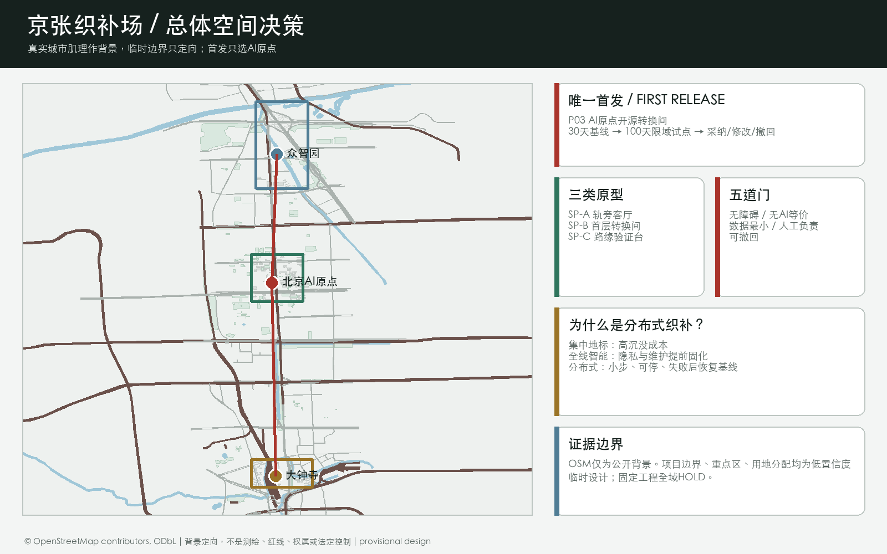
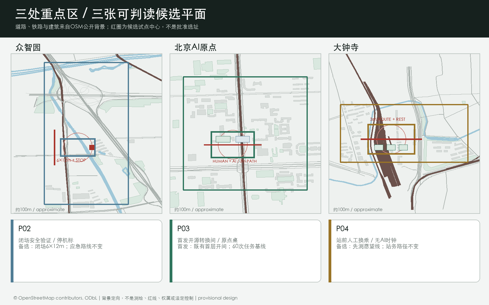
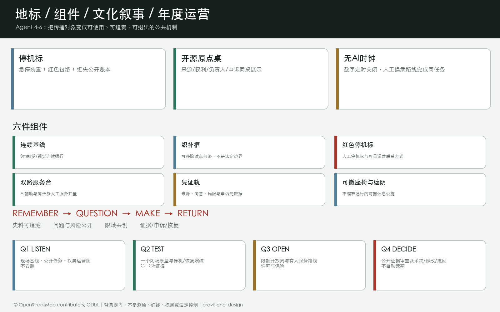
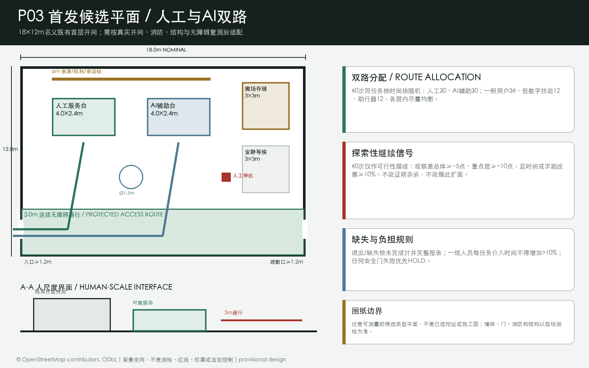
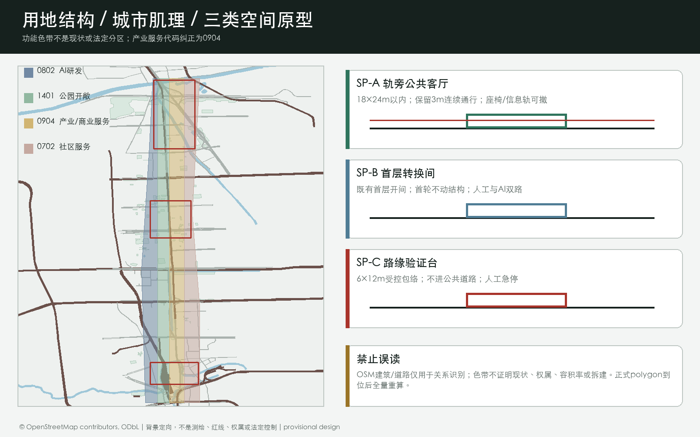
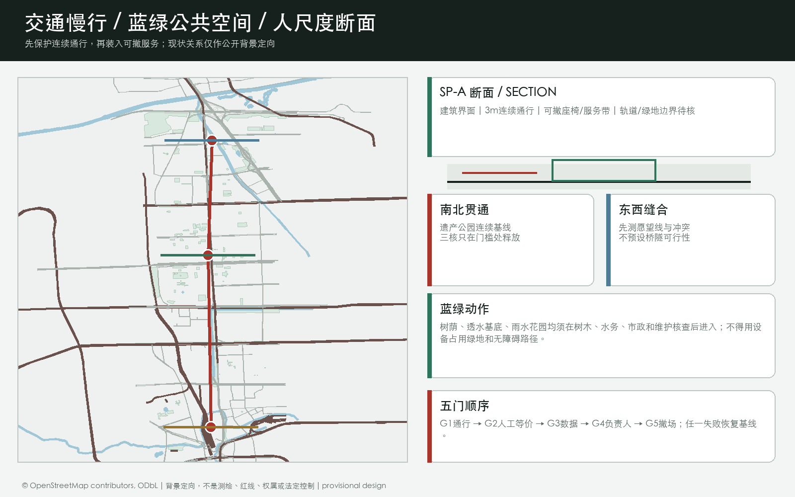
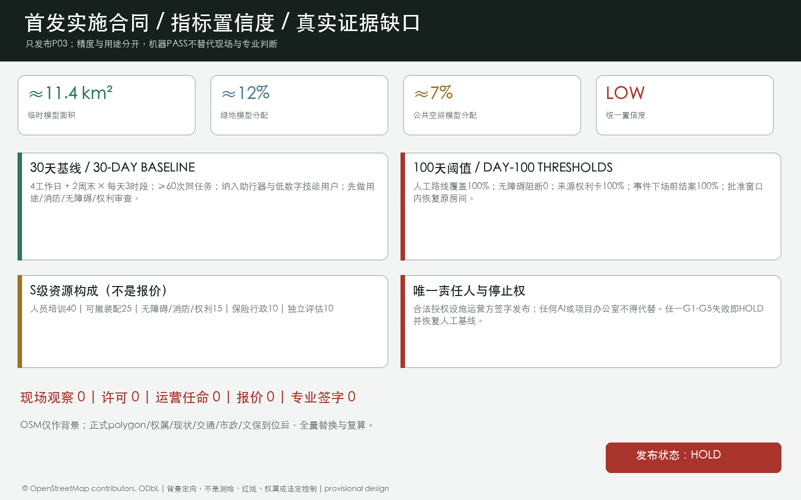

京张织补场：把公共空间变成可逆、可验收的AI城市试点
以三类人尺度空间原型、五道公共空间准入门和八个实施包，将京张遗产公园、校园、社区、站点与产业空间组织成可逆、可验收、可退出的AI城市试点网络。当前现场数据、许可、运营方与专业签字均为零，方案保持HOLD。
京张织补场：把公共空间变成可逆、可验收的AI城市试点
参赛包状态：
professional_design_package/ready_for_review（临时边界 intake；正式 polygon 到位后整体复算）
60 秒判断。 本方案不再把“AI创新带”理解为一条布满智能设施的展示带，而把它设计为一套公共空间使用制度：任何 AI 服务只有通过无障碍连续、无 AI 等价、数据最小、具名人工负责、可撤回五道门，才取得一段公共空间的限时试用权。空间载体不是一座昂贵地标馆，而是三种可复用的人尺度原型：18 m × 24 m 以内的“轨旁公共客厅”、利用既有开间的“首层转换间”、6 m × 12 m 以内的“路缘验证台”。先做 30 天现场基线，再释放一个 100 天限域试点；任一门失败，恢复原有无 AI 服务。本包没有把未取得的现场调查、许可、运营方、报价或专业签字伪装成完成成果，当前实施状态明确为 HOLD 来源 深度。
设计依据与资料清单
本方案把公告确定的三层工作范围、面向智能体任务书和仓库公开资料登记表转成可阅读、可复算、可空间复核的设计包。正式边界、控规条件、道路红线、权属、市政和文保附件尚未公开进入当前 site package，因此 site_boundary.geojson 与 key_areas.geojson 采用维护者提供的临时粗略 polygon；它们只承担生成、展示、讨论和 intake 自检，不表达官方红线或精确规划控制 来源 来源 深度。
设计判断是：当官方边界、现场数据和运营主体都尚未确定时，最科学的城市设计不是预先铺满设备，而是先保护日常通行与公共服务基线，再用可逆空间试点逐步取得证据。京张遗产公园承担连续公共路径，三处重点区各发布一个不同任务的试点，两翼连接高校、企业、社区与场景资源；AI 只辅助明确任务，不拥有审批、医疗、法律、安全或空间运营的最终决定权 标准 空间数据。
本包的权威层级依次是 GeoJSON、metrics.json、三类矩阵、manifest/source/assumptions/self-check；正文负责解释设计判断，图纸和 HTML 负责让人快速看懂。所有外部来源、生成方法、版权和待补条件均写入 sources.json 与 report/copyright_statement.md。

三层范围工作框架
方案将工作分为“看清一带、织好总体、验证三核”三步。统筹研究范围约 43.6 km²，负责产业生态、未来城市和文化叙事；总体设计范围约 11.4 km²，负责城市更新、用地结构、交通市政和京张遗址公园活力带；重点区域约 368.4 ha，负责三个节点的详细设计。面积数字来自公告，空间 polygon 在正式资料到位前保持 provisional 来源 空间数据 深度。
| 层级 | 关键问题 | 方案动作 | 主要证据 |
|---|---|---|---|
| 统筹研究范围（约43.6 km²） | AI 产业链如何与城市生活共生？ | 形成“高校策源—开源协作—企业转化—公共体验—国际传播”的创新链 | agent_taskbook.json、compliance_matrix.json |
| 总体设计范围（约11.4 km²） | 产业、更新、交通和公共空间如何落地？ | 一带三核两翼、双脉三环、多点场景；用地分区完整覆盖临时边界 | land_use.geojson、roads.geojson、phasing.geojson |
| 三处重点区（公告合计约368.4 ha） | 节点如何成为可测试、可体验的街区？ | 分别承担全栈创新、近校转化、智能原生产业生活 | key_areas.geojson、A3/A0 图纸 |
统筹研究范围产业与未来城市研究
命名与空间识别
主名称为“京张织补场”，英文名为 JINGZHANG CIVIC WEAVE。“织补”不是装饰性隐喻，而是三条可执行规则：先修补被交通、围墙、台阶和数字门槛切断的公共路径；再将可移动的服务与试验装入可撤回的空间单元；最后用验收凭证决定保留、改进或撤场。视觉识别建议采用“连续基线 + 三类织补框 + 红色停机标记”，分别表达不可中断的公共路径、有限空间授权和明确停止权。这是概念识别方向，不是注册商标或官方规范 来源 深度。
三大定位被转成三种可感知的体验：百年京张文化带是记忆、步行和讲述；都市 AI 生活体验带是每天可用的公共服务、学习、工作与社交；AI 融合创新带是从科研到企业、从算法到场景的开放测试网络。五大功能用“研发—生态—场景—活力—治理”串成回路；三区两翼为“众智园 AI 自主创新加速区—北京 AI 原点社区—大钟寺 AI 产业聚集区”，加上“中关村科技服务翼”和“小月河场景赋能翼” 来源 标准。
生态机制与全球参考
六个国际案例只提取机制，不复制规模、法律或绩效：Helsinki AI Register 提供“系统说明 + 反馈入口”的公开登记启发；Seoul AI Hub 提供按人才、初创、研发基础设施和开放创新分阶段服务的启发；Singapore National AI Strategy 提供跨部门能力建设与可信采用的背景；Barcelona Innova 提供“城市挑战 - 公开征集 - 真实场景试验 - 实验协议”的流程；Mila 提供技术、法律、社会科学和公共政策共同治理的研究协作模式；London LOTI 提供地方政府共享能力、负责任采购、信息治理和数字包容的工具思路 来源 来源 来源。
这些案例共同支持一个取舍：海淀不应先采购一套“智能城市完成品”，而应先建立任务、空间、责任、数据和退出的共同接口。Singapore、Mila 与 LOTI 仅作为能力与治理背景，不证明其制度能直接移植；所有本地运营、采购、法律和空间条件仍需专业团队与主管部门独立判断 来源 来源 来源。
总体设计范围城市更新与控规深度城市设计
总体结构建议为“一带、三核、两翼、双脉、三环、多点”：一带是京张遗址公园公共生活带；三核是三处重点区；两翼是科技服务与小月河场景赋能；双脉是遗址慢行主脉与东西向校企社区连接脉；三环是轨道接驳环、蓝绿公共环、AI 场景体验环。它把历史、产业、生活和治理放在一个可步行、可解释、可持续迭代的网络中 空间数据 空间数据 深度。
用地结构采用四类概念分区：AI 研发创新、公园绿地与开敞空间、产业服务与商业服务、社区服务与配套。它们以同一临时边界切分，避免相邻 polygon 独立手绘造成缝隙或重叠；用地代码与语义参照自然资源部用地分类指南，但不替代正式控规 标准 空间数据 深度。
更新策略是“先公共、后空间；先轻量、后结构”：近期先做导视、慢行安全、公共代码墙、可预约场景和低扰动绿地修补；中期推进低效空间的功能置换、校企服务客厅和轨道站点界面；长期才在正式权属、文保、控规、消防、市政与工程条件明确后，由专业团队研究建筑更新或新建。建筑图层表达的是概念基底与更新类型，不构成拆迁、改造或工程结论 空间数据 深度。
三类空间原型与替代方案
空间决策落到三个尺度。SP-A 轨旁公共客厅限定在 18 m × 24 m 以内，并保留 3 m 连续通行；永久层只考虑经专业核查后的树荫、透水基底与断电点，可移动层承载座椅、信息轨和有人值守服务。SP-B 首层转换间利用既有首层开间，首轮不做结构改造，用开放门诊、人工服务台与可移除测试台连接校园、企业和社区。SP-C 路缘验证台限定在 6 m × 12 m 以内，首轮只在封闭或受控空间测试，严禁未经许可进入公共道路 来源 深度。
方案比较了三种路径。集中式 AI 地标馆可见度高，但沉没成本高、日常覆盖弱、容易随模型与展陈过时；全线铺设智能设施品牌连续，但在现场数据、隐私、维护和运营方未明确前会提前固化风险；分布式织补场协调成本更高、传播速度更慢，却能在每一处取得证据后再扩容，并能在失败时恢复原有服务。因此选择第三种，而不是把“最大、最快”当成创新 来源。
重点区域详细设计

| 重点区 | 第一试点 | 人尺度空间裁决 | 100 天验收与停止条件 |
|---|---|---|---|
| 众智园 AI 自主创新加速区 | P02 安全验证院 | 采用 SP-C 路缘验证台；保留应急通道；低速设备只在闭场包络运行 | 手动停机可达且实测，零越界发布，近失事件留痕；操作员缺席或出现未解决严重近失即停 |
| 北京 AI 原点社区 | P03 开源转换间 | 采用 SP-B 首层转换间；利用既有开间；首轮不做结构改造 | 每次开放都保留同任务人工台，全部演示有来源与权利说明；个人画像或人工服务缺席即停 |
| 大钟寺 AI 产业聚集区 | P04 站前换乘客厅 | 采用 SP-A 轨旁公共客厅；先实测步行愿望线，不占站务、消防和无障碍路径 | 关掉数字设施后导向仍有效，站口与应急路径不受阻；拥挤冲突增加或无法持续值守即停 |
三个重点区的 polygon 都是临时约束，公告面积仅用于任务核对。每个节点都应由专业团队用正式图纸、权属、交通、市政和文保条件重新校准 空间数据 深度。
AI 创新生态、人才画像与 AI+ 场景
七类用户画像
| 用户 | 关键需求 | 空间回应 | 人本边界 |
|---|---|---|---|
| 轮椅与助行器使用者 | 连续路径、转身、休息与人工协助 | 所有原型先保护通行基线 | 无障碍门 G1 未通过，不得发布 |
| 老年与低数字技能居民 | 无账号、可听懂、可当面办理 | P06 公共服务双路驿站 | AI 关闭后人工路径仍能完成同一任务 |
| 日常通勤者与骑行者 | 路径可预测，活动不阻断穿行 | 遗产公园连续通行基线 | 不以展演或测试挤占连续通行 |
| 开源开发者与研究者 | 有来源的测试、署名、申诉与合作 | P03 开源转换间 | 不采个人轨迹，演示材料逐项清权 |
| 初创团队与企业测试人员 | 明确准入、保险、数据和退出 | P02 安全验证院 | 未经许可不进入公共道路或真实公共服务 |
| 一线服务与维护人员 | 有权停机、合理负荷与事故支持 | 每班具名人工负责人 | 无授权人工可停机时，门 G4 失败 |
| 访客、儿童照护者与国际参与者 | 双语、非数字导向与可休息路径 | P04 站前客厅、P07 贡献凭证墙 | 不用人脸、身份或商业排名制造排斥 |
十二张场景卡与三类产业测试
1. 慢行断点共查：AI 只聚合公开报修，实际断点由专业人员和使用者实走复核； 2. 低速机器人闭场验证：只在受控包络测试感知与路径规划，同任务人工推车作为基线； 3. 模型安全公开评测：使用已清权任务集，发布决定由独立评测主持人作出； 4. 低碳算力负荷演练：AI 只预测试验负荷，不取得电网或设施控制权； 5. 开源门诊：AI 辅助文档与问题分流，现场保留人工门诊与纸质指南； 6. 校企问题翻译台：AI 帮助结构化问题，导师与项目方决定是否合作； 7. 公共服务导航：只解释公开信息，不作审批、诊断或法律结论； 8. 京张记忆导览：可选多语讲述必须来自清权史料，实体双语导视始终可用； 9. 无障碍导向复核：音频导航必须在专业审查后上线，不能替代触觉、视觉和人工协助； 10. 站前拥挤提示：只有在获授权且不识别个人时才使用聚合客流估计； 11. 贡献凭证展：AI 只辅助元数据检索，荣誉认定由独立策展与申诉机制负责； 12. 开放周排程助手：AI 只起草容量约束时刻表，具名组织者签字发布。
其中 2、3、4 是产业测试验证场景。每张卡都在 visual/assets/delivery_contracts.json 绑定空间原型、主要用户、AI 角色、无 AI 基线与运营责任；它们是待批准试点，不是已运行项目 来源 空间数据 深度。
三处公共地标、文化叙事与长期运营

三个“朝圣地标”不是大型造型物，而是能被日常使用、能暴露责任的公共装置。北段众智园设置 停机标：闭场验证台、人工急停与近失事件公开账本形成一体；中段 AI 原点设置 开源原点桌：每项演示同时显示来源、权利、人工负责人和申诉路径；南段大钟寺设置 无 AI 时钟：数字服务定时关闭，以实体导视和人工路线完成同一换乘任务并记录耗时。三处均须在正式选址、权属和专业审查后落位，不以地标名义侵占通行、绿地、文保或站务空间 来源 深度。
公共空间组件库包括 3 m 连续基线、可移除织补框、红色停机标、AI/人工双路服务台、来源与申诉“凭证轨”、可撤座椅和遮阴六件。荣誉体系展示“可核实的公共贡献”而不是个人或企业热度；每条贡献必须有公开来源、同意、独立策展人、局限和申诉状态，禁止付费排名、人脸识别、商业榜单和暗示政府背书 来源。
文化叙事采用 记住 REMEMBER - 提问 QUESTION - 共创 MAKE - 归还 RETURN 四步。遗产路径只使用可追溯史料讲述京张铁路；三个门厅把中关村的协作文化转成公开问题与风险台账；限域原型展示共同制作；贡献墙同时记录成功、失败、申诉与恢复基线。双语导视分为“整体识别”和“文化史料标识”两层，后者必须逐条清权，不把科技装饰冒充历史 来源。
长期运营按四个季度循环，而不许诺具体活动已经获批：Q1 听见，完成现场基线和公开任务征集；Q2 验证，只开放一个闭场试点；Q3 开放，在许可、保险和容量约束下做小规模开放周；Q4 决定，公开采纳、修改或撤回记录。转化路径固定为“公开问题 - 独立闸门审查 - 运营方补齐许可/保险 - 100 天证据 - 多方决定”，开发者或企业不会因参展自动获得采购、招商或政策支持 来源 深度。
唯一首发：AI 原点开源转换间
首发只选 P03，不同时启动三核。候选载体是 AI 原点临时范围内一个既有首层开间，具体地址待资产方同意、消防/无障碍核查和正式边界后选择。唯一决策负责人是合法授权的设施运营方。30 天基线包含 4 个工作日、2 个周末、每天 3 个时段，至少 60 次同任务尝试，并通过无障碍方式纳入助行器使用者和低数字技能使用者。100 天发布阈值为：每场 100% 保留无账号人工路线、试点包络内无障碍阻断为 0、演示来源与权利卡覆盖率 100%、全部事件/近失在下场前结案、撤场演练在批准闭场窗口内恢复原房间 来源。
效果评估将 60 次同任务尝试按时段区组随机分配为人工路线 30 次、AI 辅助路线 30 次；其中一般使用者 36 次、低数字技能使用者 12 次、轮椅或助行器使用者 12 次，各层内两路线均分。这只是探索性可行性样本，不能统计证明非劣，也不能授权扩面。观察差达到总体不低于 -5 个百分点、两个重点层各不低于 -10 个百分点，且中位完成时间或人工介入改善至少 10%，只允许继续改进设计。任何扩面之前，必须由独立统计人员预注册主要结局、单侧显著性水平、至少 80% 功效、人工路线预期完成率、失访、置信区间方法及据此计算的总体和分层样本量；只有充分功效的确认性结果与全部安全门同时通过才可扩面。退出、缺失结局或跨路线在探索分析中按未完成计，并另发按实际路线敏感性表；一线人员每项完成任务的投入分钟数不得增加超过 10%，安全和人工停机权始终优先 来源。

资源构成只作为 S 级工作量分配：人员与培训 40%、可撤装配 25%、无障碍/消防/权利审查 15%、保险行政 10%、独立评估 10%，不是报价。必须先取得资产方同意、用途核对、消防疏散、持证无障碍审查、活动/保险和隐私内容审查；其余两核只保留为后续备选 来源。
用地、建筑规模与拆改留方案

用地分区完整覆盖提交边界，但只是低置信度的功能分配，不是现状用地或法定分区；产业服务区代码采用 0904，不再误用湿地代码 05。建筑和道路图层改用 2026-08-25 获取的 OpenStreetMap 公开快照作为视觉背景，只帮助判断道路、铁路与建筑肌理，不作为正式边界、测绘、权属、规划指标或拆改留依据。绿地与公共空间比例仍是临时设计模型的必需读数，统一标记低置信度；容积率、总建筑规模、建筑高度、建筑密度、退线和道路面积保持 unknown 来源 标准 指标。
拆改留采用四级判读：保留公共记忆与可继续使用的建筑；改造低效首层和公共界面；拆除/新建仅作为待正式调查后的备选；无法判断的对象标为待确认。任何具体地块的拆改结论都必须待权属、现状测绘、文保、消防、结构和市政资料核实后，由专业团队深化 深度 深度。
交通、轨道、市政与公共服务设施

交通策略是“轨道到达—慢行分配—服务可达”。建议将轨道站点周边做成可读的换乘前厅，建立连续无障碍步行、骑行停放、微循环和公共服务接驳；道路图层仅表达概念联系，不代表道路红线。三条接口分别服务众智园对外到达、AI 原点校企慢行、大钟寺站四象限步行；两翼补充中关村科技服务和小月河场景赋能 空间数据 标准 深度。
新型基础设施建议采用“能解释、可断开、可维护”的原则：公共服务节点可承载预约、导视、设施报修、场景测试和低碳算力展示；涉及个人信息、科研数据、企业数据和公共安全的系统必须最小化采集、分级授权、人工复核并提供退出机制。市政管线、容量、消防、雨洪和能源接入均为待核实条件，不写成已确定工程 标准 深度。
蓝绿空间、公共空间与城市风貌
京张遗址公园活力带建议被组织为“可停留的线性客厅”：遗址讲述点、树荫座椅、可预约展演、无障碍导视、低干扰夜间照明和雨水花园形成连续但不喧闹的公共体验。蓝绿图层表达的是方案空间意向，公共空间比例为本包几何读数，不是城市绿地率或法定指标 空间数据 空间数据 指标。
城市风貌建议“历史材料轻触、创新界面开放、首层连续可用”：遗址邻近界面控制标识与视线，创新节点采用可变展陈和夜间可读性，社区界面优先安静、舒适和无障碍。色彩、材质、建筑高度和天际线仍需正式风貌控制、文保和建筑设计条件确认 标准 深度。
更新项目清单、实施政策与分期计划
八个可独立采纳的实施包分别是：P01 遗产公园连续通行基线、P02 众智园安全验证院、P03 AI 原点开源转换间、P04 大钟寺站前换乘客厅、P05 小月河雨洪与慢行织补、P06 公共服务双路驿站、P07 三核贡献凭证墙、P08 织补场年度开放周。每包均在 visual/assets/delivery_contracts.json 写明第一责任角色、协作角色、30 天工作、100 天成果、许可/同意前置、资源量级、验收凭证与停机条件 来源 深度。
| 时间门 | 允许动作 | 必交凭证 | 禁止跨越 |
|---|---|---|---|
| 0-30 天 基线 | 现场实走、权属/运营图、通行与无障碍、管线/消防初筛、用户和一线人员访谈 | 基线图、冲突台账、数据与权利清单、具名责任矩阵 | 不安装固定设备，不采集个人数据，不宣传已落地 |
| 31-100 天 限域试点 | 只选一个原型、一个任务、一个有人值守时段；做停机和撤场演练 | G1-G5 逐门证据、事件/近失记录、恢复验收、公众与一线人员反馈 | 不扩区、不并发复制、不进入公共道路或高后果服务 |
| 100 天后 采纳/修改/撤回 | 由资产方、服务方、专业团队与公众代表基于证据决定 | 决策记录、责任交接、资源与维护计划、条件触发清单 | 机器自检分数不能代替许可、专业签字和公众判断 |
资源量级仅用于方案比较：S 为临时装配与有人值守试点的百万人民币以内工作量级，M 为公共空间样段或多方试点的 100-500 万元工作量级，均不是采购报价；超过 500 万元或涉及资本性工程的 L 级工作不进入首轮发布。现场报价、施工图、工程量、审批与资金均待正式流程 来源 深度。
指标体系、面积复算与合规矩阵
当前低置信度空间读数：临时总体设计 polygon 约 11.4 km²；绿地设计读数约 12%；公共空间读数约 7%；重点区 3 处。建筑图层只记录三处候选可逆试点包络，合计上限 720 m²，不是现状建筑基底、建设容量或拆改依据。设计交付还包括 3 类空间原型、8 个实施包、12 张场景卡、3 类产业验证场景和 7 类用户画像 指标 指标 指标。
待正式数据补齐的指标包括容积率、总建筑面积、建筑高度、建筑密度、退线、道路红线、权属和市政容量。compliance_matrix.json 覆盖公告 1.3、1.4、1.5 与 agent.1—agent.6；standard_matrix.json 覆盖专业标准；design_depth_matrix.json 的十五项 formal 深度均以 complete 记录设计证据，但 provisional geometry 仍需正式资料替换后复核 指标 深度 来源。

风险、版权与合规说明
最大风险是把临时 polygon 误读为官方红线。因此全文、HTML、图纸和自检均显式标注 provisional；正式 polygon 到位后必须整体重算，不能只替换一个文件。其次是 AI 场景的隐私、偏见、误报、网络安全和运维责任；每个公共场景均应以最小化数据、可解释输出、人工复核、申诉和退出机制为前提，不以个人画像或强制采集作为必要条件 深度 空间数据。
实施真实性采用“零状态”披露：截至生成日，现场观察 0、确认许可 0、具名运营方任命 0、采购报价 0、专业签字 0，所有试点均为 HOLD。这不把组织方缺资料当成当前扣分项，但明确列出进入现场前必须补齐的官方 polygon 与控规、权属与运营图、无障碍和交通调查、市政/消防/文保条件、社区与一线人员参与、保险与许可路径。任何效果图、桌面演练或机器 PASS 都不得冒充这些证据 来源 深度。
本包证据图由本地 Python/Pillow 与 ReportLab 生成，字体使用系统字体，仅使用仓库公开/清权资料和本包自绘图形；封面由 OpenAI 图像工具生成并明确标注为概念表达，不是现场照片或官方效果图。没有使用商业地图瓦片、未授权人物/企业标识、私人资料或远程资源。PDF、PNG、HTML 是解释层，GeoJSON、metrics 和矩阵是证据层。方案为 AI agent 的开放共创建议，不是政府批准、控规成果、工程设计、投资承诺或已建成项目 来源 来源。
参考资料
- 北京市规划和自然资源委员会海淀分局：《百年京张AI创新带城市设计国际方案征集资格预审公告》，https://ghzrzyw.beijing.gov.cn/zhengwuxinxi/tzgg/hd/202605/t20260509_4643047.html；
brief/site-package/design_brief.json、allowed_design_space.json、agent_taskbook.json；data/source_registry.json与data/processed/agent_fact_pack.md；brief/site-package/standards/references/中的城市设计、控规、用地分类、AI 服务和无障碍参考快照；- 机器可读来源索引与用途边界见 来源。